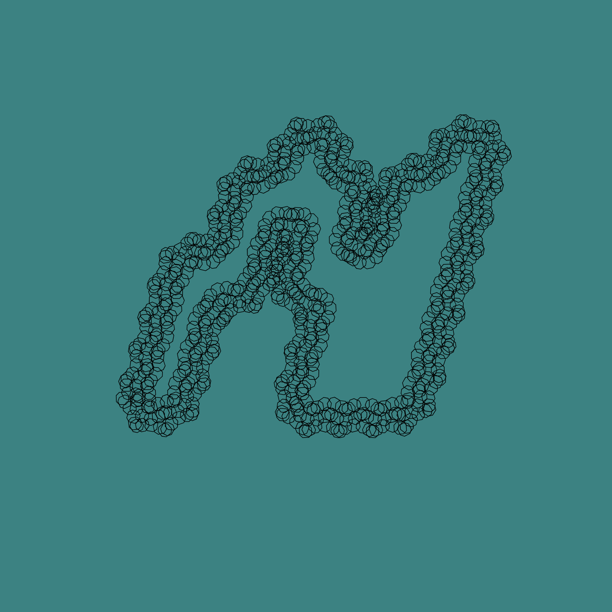

Sketch 16
What I made with p5 -- Day 16!

var zerovelo;
var letterPoints;
var fontSize = 500;
var p = 0;
function preload() {
zerovelo = loadFont('fonts/zerovelo.ttf');
}
function setup() {
createCanvas(1000, 1000);
background(60, 130, 130);
textSize(400);
textFont(zerovelo);
text('N', 500, 500);
frameRate(5);
letterPoints = zerovelo.textToPoints("N", 500, 500, fontSize);
console.log(letterPoints);
}
function draw() {
background(60, 130, 130);
translate(-300, 200);
noFill();
stroke(255, 0, 0);
textSize(500);
textFont(zerovelo);
for (var i = 0; i < letterPoints.length; i++) {
push();
translate(letterPoints[i].x, letterPoints[i].y);
noFill();
rotate(20 * p);
p++;
octo(0, 0, 10, 1) //x, y, size, thickness
pop();
}
}
BACK TO MENU